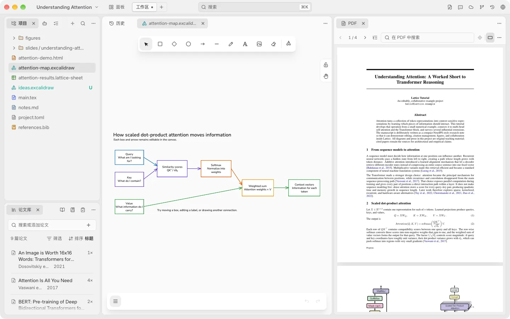

白板
白板是保存在项目里的 Excalidraw 画布，文件扩展名为 .excalidraw。可以用来构思还没定稿的图、画给合作者看的示意图，或者在论文旁边记笔记。
新建白板
在 项目 面板的空白处（或某个文件夹上）右键，选择 新建文件，文件名以 .excalidraw 结尾，例如 ideas.excalidraw，就会打开一块空白板。其他地方的 .excalidraw 文件也一样能打开：用同一菜单里的 导入文件…。
绘图
顶部工具栏有选择、矩形、菱形、椭圆、箭头、直线、自由画笔、文字、图片和橡皮擦。箭头会吸附到图形上，移动图形时保持连接。锁定按钮让当前工具保持选中；手形工具用来平移画布。撤销和重做在右下角，左下角的菜单有导出和画布选项。

白板边画边保存，和其他文件一样出现在 历史 里，也会作为普通文件同步到 Overleaf。AI 助手也能读取和修改白板。